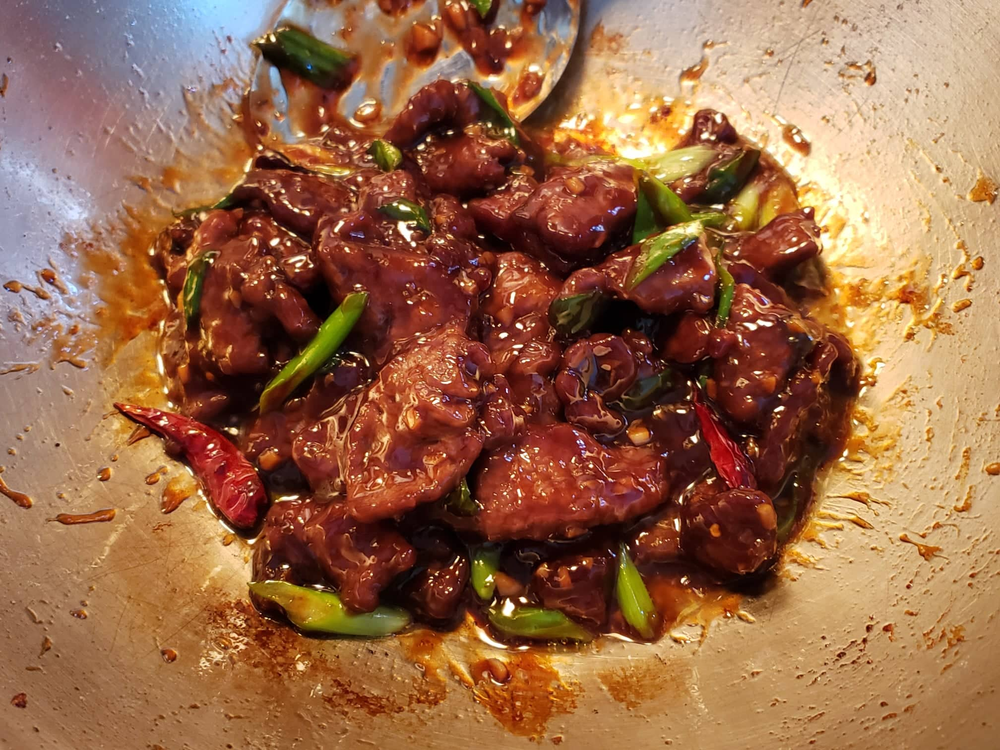

Mongolian Beef

Ingredients:
Marinade:
- 1/2 lb Flank steak, cut into 1/4 inch strips
- 1 tsp Vegetable oil
- 1 tsp Soy sauce
- 1 tbsp Cornstarch
Sauce:
- 1/4 cup Warm water, low sodium chicken stock, or low sodium beef stock
- 2 tbsp Brown sugar
- 1/4 cup Light soy sauce
Other Ingredients:
- 1/3 cup Vegetable oil
- 1/4 cup Cornstarch
- 1/2 tsp Ginger, minced
- 5 dried Red chili peppers
- 2 cloves Garlic, minced
- 1 tbsp Cornstarch, mixed with 1 tbsp Water
- 2 Scallions, cut diagonally into 1 inch pieces
Instructions:
- Combine marinade ingredients and let marinate overnight.
- In a small bowl, combine sauce ingredients. Use warm or hot water/stock to ensure the sugar dissolves completely. In a separate small bowl, combine the 1 tbsp cornstarch and 1 tbsp water.
- Dredge the the marinated beef slices in the 1/4 cup of cornstarch until lightly coated.
- Heat 1/3 cup vegetable oil in a wok over high heat. Just before the oil starts to smoke, spread the flank steak pieces evenly in the wok, and sear for 1 minute on one side. Turn over and let the other side sear for another 30 seconds. Remove from the wok and reserve. The beef should be seared with a crusty coating.
- Drain some oil from the wok, leaving about 1 tablespoon behind. Turn the heat to medium-high. Add the ginger and dried chili peppers and stir. After about 15 seconds, add the garlic. Stir for another 10 seconds and then add the premixed sauce.
- Let the sauce simmer for about 2 minutes and then slowly stir in the cornstarch slurry mixture (making sure that the cornstarch has not settled before adding it in). Cook until the sauce has thickened enough to coat the back of a spoon.
- Add the beef and scallions and toss everything together for another 30 seconds. There should be almost no liquid, as the sauce should be clinging to the beef. If you still have sauce, increase the heat slightly and stir until thickened.